TITLE 01
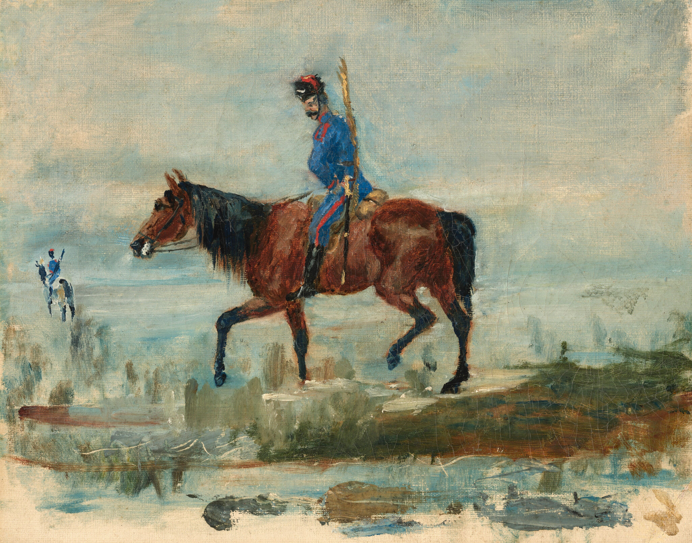El impensado ilustre Guillermo imaginario -¿Imagen?
---Ninguna -tal vez sólo una --A caballo ayeguando
--Junto a Mr. Mateo imaginario de los mates imaginarios
-¿Cómo? Galopando por las lomas imaginarias
----Cerca de la torre imaginaria los dos personajes imaginarios
---Imagino a genios imaginarios --Wow -Legendarios
--Amigos del horario --Sin hora -Del sol imaginario
-La luna sin luz imaginaria --De los teoremas imaginarios
---¿Quién?
--El imperdonable e imparcial Imán imaginario
----¿Cuántos más imaginaste? -10 imaginarios -Oh!
-Fue un impacto imaginario del ilusionista imaginario.
TITLE 02
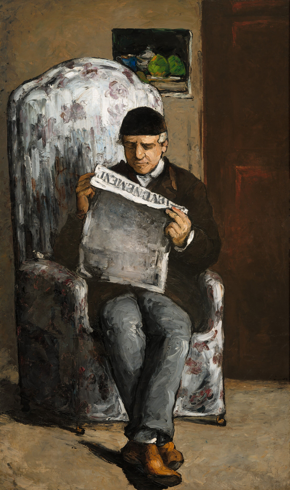----Del motor imaginario solo hay tuercas imaginarias
---De la polea imaginaria solo recuerdos imaginarios
--Del tiempo imaginario Milis imaginarios
-Sr/. Sí Sr/. Es imperativo que iluminen el impenetrable imaginario.
-¿?
--Honorables
---De las ideas ultra imaginarias
----Desde el iceberg más imaginario.
-Los pelotones del liquido imaginario del hogar.
?¿
Nada es imaginario
-Todo no es imaginario
--Por las páginas imaginarias el honor imaginario
---Heraldo de las heridas imaginarias
?¿
Honesto historiador del héroe imaginario.
La aguda aguja del grey imaginario
---Gravitando del general imaginario
--Sobre las trincheras más imaginarias
Muy próximo al glacier imaginario
-Esta el Génesis imaginario del glosario imaginario.
TITLE 03
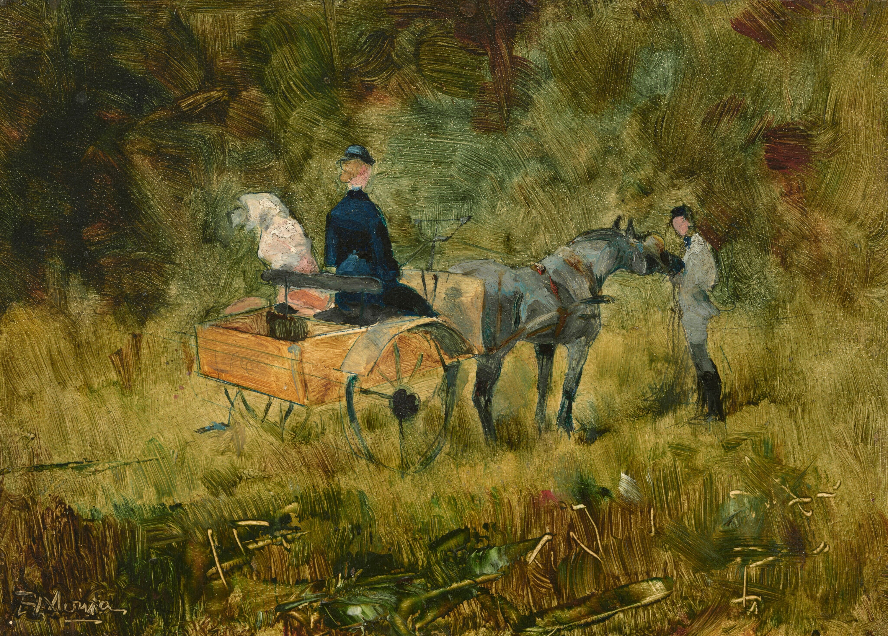La física de las fórmulas imaginarias -Alias
Galaxias imaginarias de las fracciones imaginarias
---De la química más imaginaria
----Al frontis del frio fósil imaginario
------Imaginas muchas cosas imaginarias -Niñ/
-----Desde la franja del franco fraile imaginario
----De la forma canónica más imaginaria
-------Los axiomas -Anti-imaginarios
-Antiátomos de antimateria imaginaria -Antes
--Las flores de la fortaleza imaginaria
---De la fiebre fiel imaginaria
----Antiflores del antifaz de la faz de la tierra imaginaria.
TITLE 04
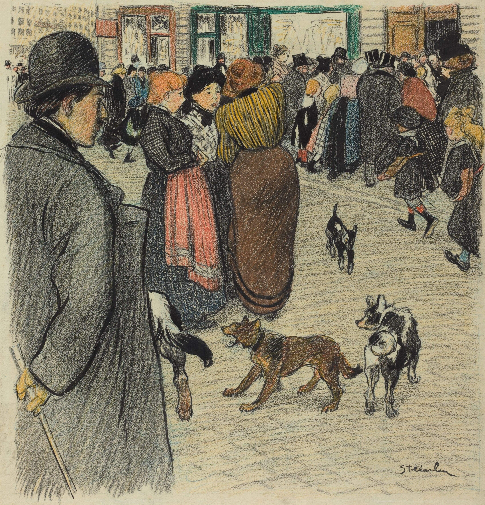Continuando imaginariamente -Los grupos de cinco
-----Imaginari/s
----Inaudita la vitalidad del vocablo imaginario
---Volantines de volátiles valores imaginarios
-La huella imaginaria de l/s honest/s imaginari/s
--Inapreciable los momentos imaginarios
---Segundos días meses años siglos imaginarios!
----Inalterablemente la voz imaginaria
Del yugo de la yunta que yace imaginariamente
Del gesto del gigante gentil imaginario
-----Del carril de los rieles a cargo de los imaginarios
----Esta allí desmayando el desorden imaginario.
TITLE 05
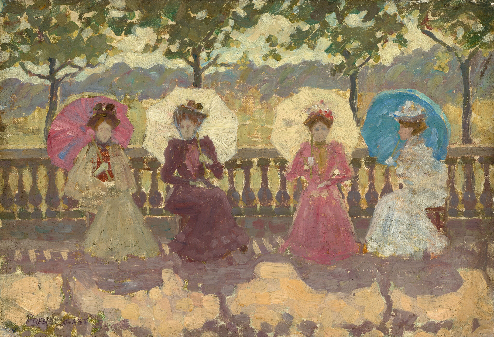Vamos creciendo imaginariamente
Sobre las guerras imaginarias de la paz imaginaria
Sobre las torres imaginarias sobre los árboles de imagen --áridas
Sobre personas imaginarias
Sobre animales imaginarios -sobre libros --sobre todo
---Sobre sonrisas imaginarias -sobre letras ---sobre mesas
--Imaginario del círculo cuadrado desde el rombo
Romántic/ de frutas frutillas imaginarias
Este es el quinto imaginario
--De los cuatro atletas imaginarios
---Sobre calles veredas paradas praderas imaginarias
----Sobre imperios -templos -reuniones imaginarias.
OIMAGINARIO DE IMAGENES --Genes de veinte mil
---Super imaginari/s --Super simetría
----Super gammas de las fuerzas imaginarias
--Super estrellas de la bid de la vida imaginaria.
TITLE 06
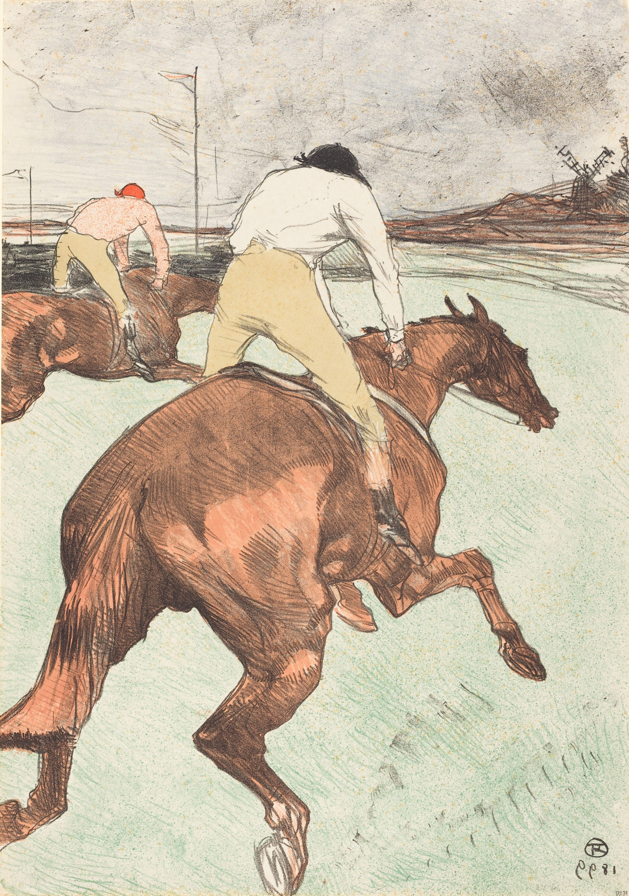----Fueron las Trompetas de las trampas imaginarias
---Fue el viento de los aires por los cielos imaginarios
--Fueron los ángeles de las alas imaginarias
-Fuimos a leer las letras de la sopa más imaginaria
-Las tristesas de la felicidad imaginaria -Fue
--Las cerezas de los pomelos imaginarios -No sé
---Los personajes del inicio imaginario
----Las manzanas de los corderos ultra imaginarios
-----De las manos imaginarias
----Desde los pisos imaginarios
---De los dientes de los ojos más imaginarios
--Desde las mentes mantos montones de imaginari/s
TITLE 07
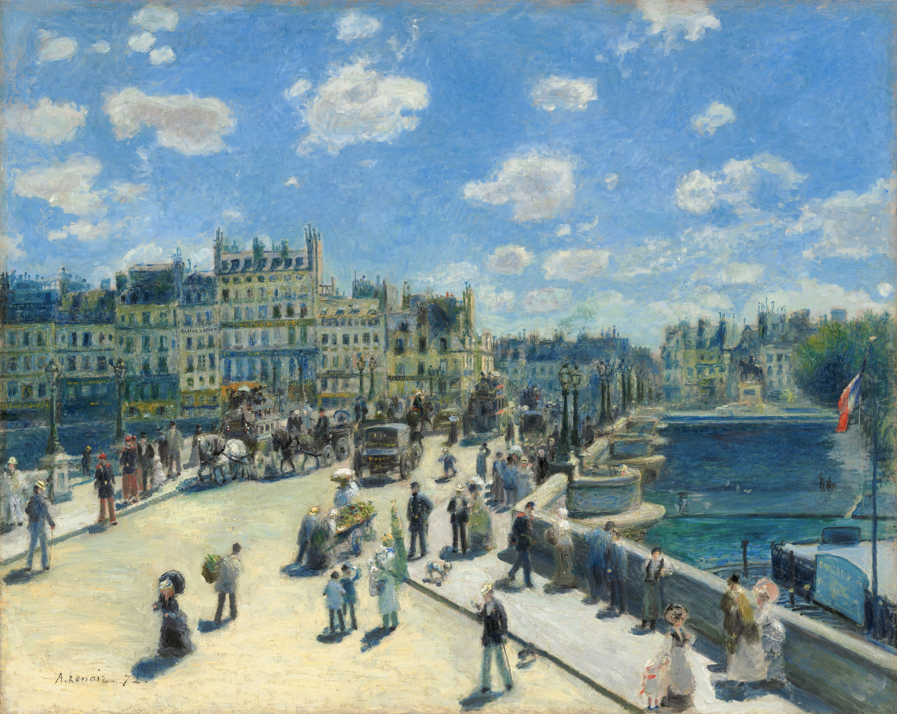De las playas de los pueblos imaginarios
--Los seres vivos imaginarios
---Las aflicciones de la acción imaginaria
----Las actividades grandemente imaginarias
-----Los conciertos de las semanas imaginarias
----Las aventuras del humano del brazo
---Las tinturas de tinta tanto más imaginarias
--Sobre uno de los libros refinado de imágenes
-En el punto de inflexión sobre la curva imaginaria
--Puedes divisar la división imaginaria
---Los tiempos atempo imaginarios
----Las siluetas de la sombra imaginaria.
Guillermo!!
Roberto!
Heriberto
Heraldo!!! Otros y muchos más. --Nombres imaginarios
TITLE 08
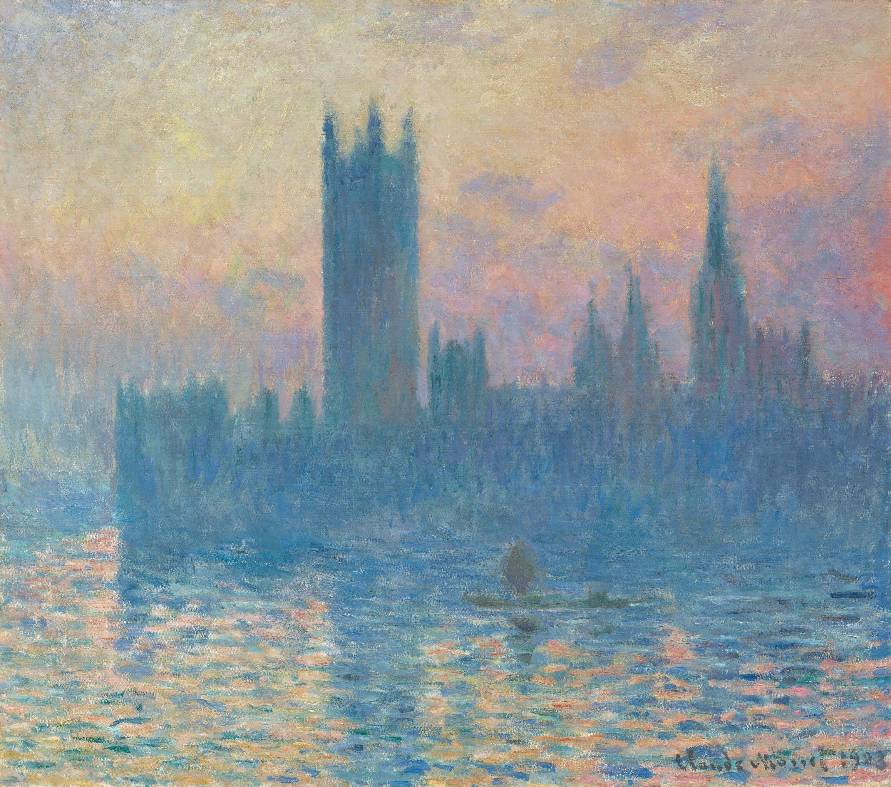El clima templado es imaginario
----Las herramientas electrónicas imaginarias
---Desde la montaña más empinada imaginaria,
--Los corazones y las plumas imaginarias
-Los saludos imaginarios
--Los sistemas imaginarios -climax
---Los anatemas de antemano imaginarios
----Sigma la beta imaginaria.
----Velocidades ultra imaginarias
---Las últimas imágenes deliveradas entregadas
--Las espadas las armadas los armados amados herman/s
-El piso de puas imaginario -De sueños
--TODO & NADA --mente. Ahora del presente pasado y futuro imaginario
TITLE 09
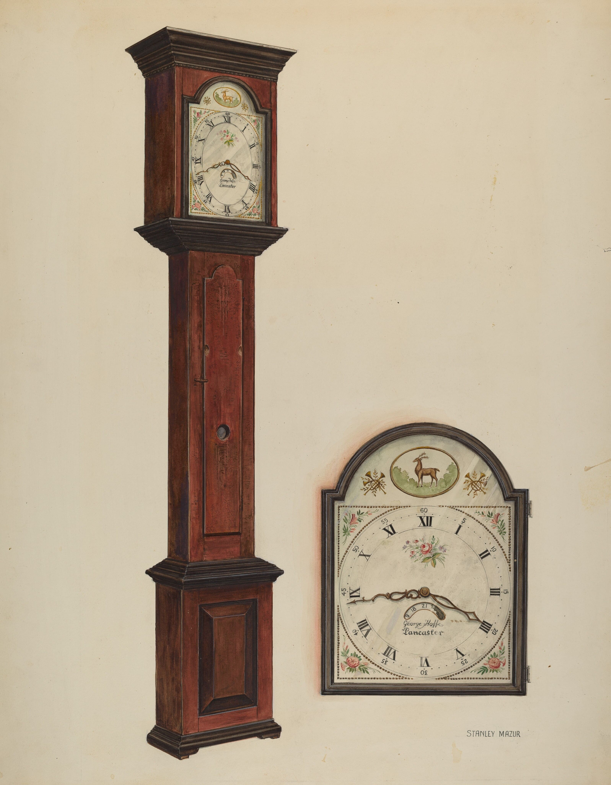Las paralelas escaleras anti-imaginarias
-Del profundo del abismo imaginario
--Desde lo alto de los mares imaginarios
---Los reflejos desde lejos aún imaginarios
----Los dos jinetes sobre la torre imaginaria
---Blanco celeste y amarillo naranja imaginarios
--Sobre los escalones imaginarios
-El eco del silencio imaginario
-Los instrumentos cómo Arpas imaginari/s
--Los panderos de los pandas imaginarios
---Las pinzas del pensar ultra imaginarias
----Desde los sueños de las sábanas imaginarias.
TITLE 010
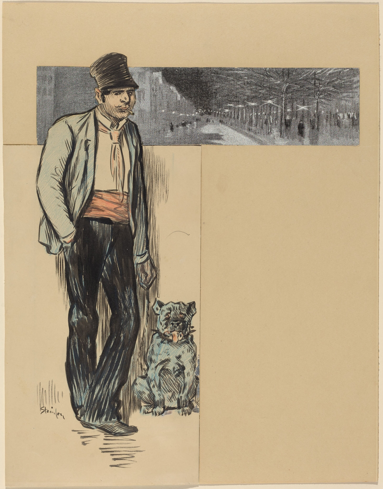El contemporáneo continente imaginario
Cuento contiguo a la conciencia imaginaria
Un contacto tácito imaginario
-----El coeficiente de la coherencia de los cadetes imaginarios
----Ahí hay exploradores imaginarios
---Deliberando sobre las conjugaciones imaginarias
--Cofres de oro -de cobre imaginario
-De carbono Milenario -Columbias
-De brazas breves la bujía imaginaria
--Ballet de las balanzas del blanco mas blanco
---Del brillo del bálsamo de la balsa en la bahía
----Bramidos de la avenida esperanza imaginaria.
TITLE 011
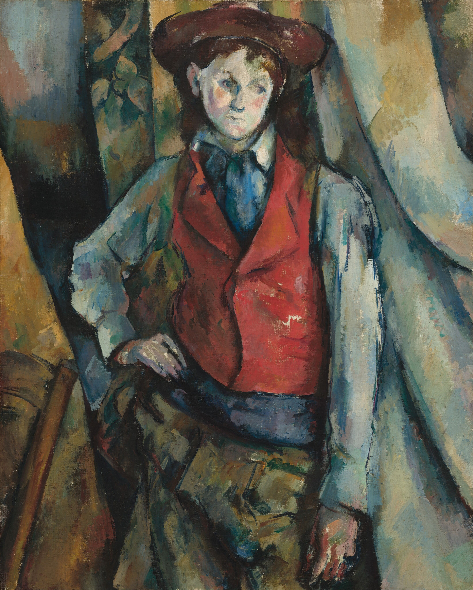 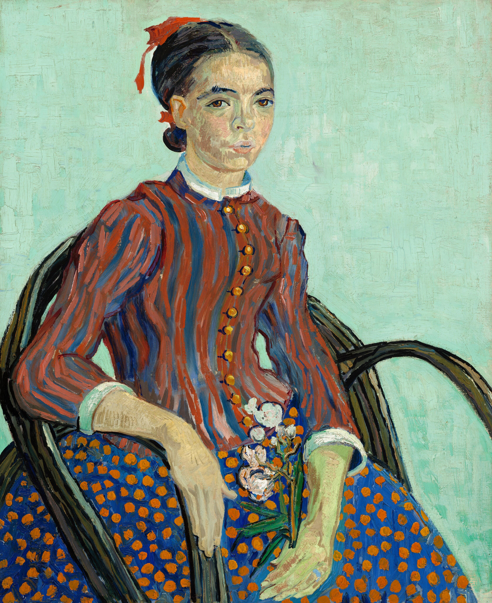La bicicleta de pedales imaginarios
-Tiene explicaciones imaginarias
--Tiene versos imaginarios
---Tiene estrofas imaginarias
----Los zapatos con cordones imaginarios
---Tienen potencias imaginarias
--Efectos imaginarios especiales
-Desde las imaginarias líneas
-La polera de humano imaginario
--Tiene paisajes imaginarios
---Tiene verbos imaginarios
----Tiene una corbata imaginaria
----Los pinceles de acrílicos imaginarios
---Tienen cristales imaginarios
--De vestiduras imaginarias
-Desde la casa imaginaria --Puertas imaginarias.
-----Preguntas imaginarias
¿?
----Imaginarias respuestas
---De los deseos decididos a imaginar.